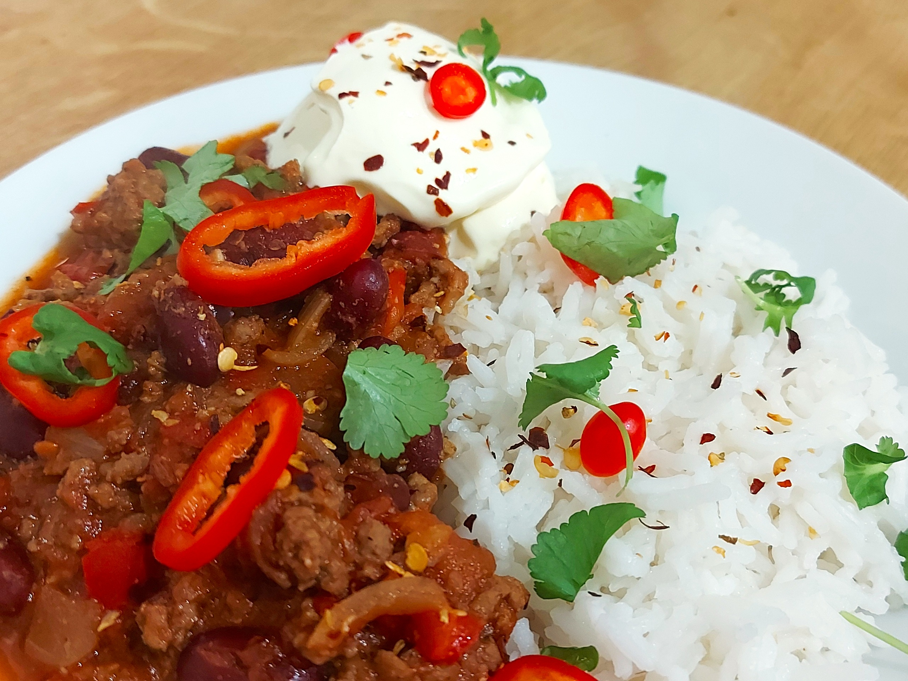

Chilli Con Carne

Chilli con carne made using this recipe.
Description
Here is my recipe for chilli con carne. I have found that adding brown
sugar gives a much more enhanced flavour. (5 Servings)
Nutritional Information
(All values estimated, per serving)
- Protein: 31g
- Carbohydrates: 70g
- Fat: 16g
- Total Calories: 485kcal
Ingredients
- Oil - 2 tsp
- Brown Onion - 1
- Minced Beef - 500g
- Red Pepper - 1
- Garlic - 4 Cloves
- Tomato Puree - 2 tbsp
- Ground Coriander - 1/4 tsp
- Paprika - 1 tsp
- Ground Cumin - 1 tsp
- Cayenne Pepper - 1 tsp
- Garlic Powder 1 tsp
- Oregano - 1 tsp
- Beef Stock Cube - 1 Cube (half the amount of water)
- Red Kidney Beans - 400g
- Chopped Tomatoes - 400g
- Brown Sugar - to taste
- Salt - to taste
- Black Pepper - to taste
- Boiled Rice - 112.5g (cooked)
- Soured Cream/Creme Fraiche - 2 tbsp
- Dried Chilli Flakes - garnish
- Fresh Chilli - garnish
- Fresh Coriander - garnish
Method
- Heat 1 tsp of oil in a saucepan on medium heat.
- Chop and add the onion to the pan, and cook until soft.
- Add another tsp of oil and the minced beef, and cook.
- Chop the red pepper and garlic and add to the saucepan.
- Stir in 2 tsp of tomato puree.
- Add 1/4 tsp ground coriander, 1 tsp paprika, cumin, cayenne pepper, oregano and garlic powder and mix.
- Make the beef stock using half the amount of water and add to the pan.
- Add the red kidney beans and cook for 5 minutes.
- Add the chopped tomatoes and simmer on a low heat for 30 minutes.
- Season to taste with salt, pepper and brown sugar.
- Serve with soured cream or creme fraiche on boiled rice.
- Garnish with dried chilli flakes, fresh chilli and coriander, and enjoy!
Back